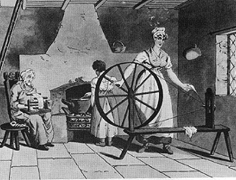

Per tutto il Medioevo la trasformazione delle materie prime (per esempio, la lana) in prodotti finiti (per esempio, i tessuti) era stata opera da artigiani che lavoravano a bottega con delle proprie macchine semplici (per esempio, i telai). Già dalla fine del Cinquecento aveva cominciato a svilupparsi in Inghilterra il lavoro a domicilio, eseguito cioè a casa propria ma per conto di altri. Mercanti di città distribuivano alle famiglie contadine le materie prime per la lavorazione e qualche volta anche gli strumenti di lavoro, e passavano poi a ritirare, entro un dato termine, il lavoro finito. Nelle case contadine si lavorava nel tempo libero dalla coltivazione. Mentre in passato potevano lavorare solo gli uomini, con l'arrivo del lavoro a domicilio le donne hanno preso un ruolo nella produzione tessile, filando e svolgendo altre mansioni legate al lavoro tessile direttamente nelle loro case. Tutti collaboravano alla produzione,compresi i bambini e gli anziani, avvolgendo il filo in matasse o svolgendo altre attività complementari.. L'introduzione di innovazioni tecnologiche come telai meccanici e macchine per la filatura ha aumentato la produttività del lavoro tessile. Le famiglie contadine, grazie a queste tecnologie, potevano produrre una maggiore quantità di beni finiti in meno tempo. Il compenso non era alto ma i contadini se ne accontentavano, con grande vantaggio dei mercanti. Oggi, molte persone lavorano da casa usando computer e Internet. Fanno lavori come scrivere, programmare, progettare grafica o assistere i clienti da remoto. Questo offre più libertà nell'orario di lavoro e nel bilanciare vita professionale e personale. Ma lavorare da casa può ancora essere difficile. Alcuni possono non avere sicurezza sul lavoro o accesso a benefici come l'assistenza sanitaria. Altri potrebbero non avere protezione sindacale. La pandemia ha reso il lavoro da casa ancora più diffuso, ma ha anche evidenziato problemi come la mancanza di connessione sociale e la gestione dello stress.